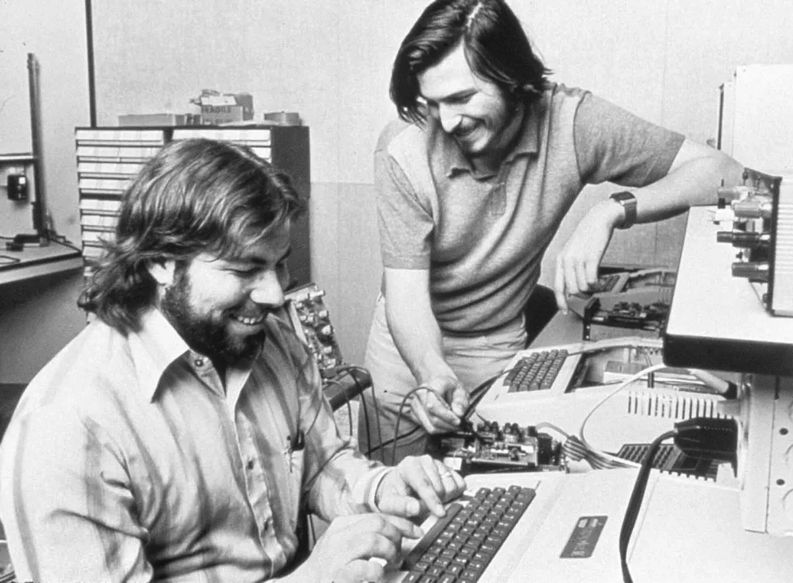
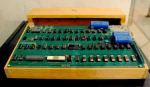

Steve Wozniak fait la connaissance de Steve Jobs en 1970 grâce à son voisin Bill Fernandez, alors camarade de classe de Jobs à la Homestead High School. Ils partagent la même passion de l'électronique, ils deviennent amis et réalisent ensemble de nombreux canulars.

En 1971, Steve Wozniak et Bill Fernandez, étudiants et voisins, se réunissent dans le garage de Steve Jobs afin de créer leur premier ordinateur à partir de pièces détachées.
Cet appareil est nommé « Cream Soda Computer », d'après la boisson que les deux étudiants consomment pendant la fabrication.
À l'automne 1971, les deux amis retournent à l'Université de Californie à Berkeley et se lancent dans l'aventure de la commercialisation. Ils vendent des « Blue Box » conçues par Wozniak sur la base des numéros enregistrés dans le magazine Esquire d'octobre 1971.
Ces boîtiers électroniques portatifs permettent de passer gratuitement des appels téléphoniques illégaux en reproduisant les signaux utilisés par une compagnie de téléphone et sont vendus au prix de 150 $ dans les dortoirs de l'université.
Durant l'été 1972, les deux étudiants et la petite-amie de Jobs trouvent un emploi, payé 3 $ de l'heure au Centre commercial de San José et se déguisent en personnages d'Alice au pays des merveilles. Un an plus tard, Wozniak travaille dans le secteur de l'APD dans l'entreprise Hewlett-Packard, puis Fernandez le rejoint et ils conçoivent des calculatrices portables.
fin 1976, les Apple Computer ne sont vendus que dans dix boutiques aux États-Unis. Markkula établit un objectif de croissance des revenus à 500 millions de dollars en dix ans.
Pour rendre cela réalisable, il investit personnellement 92 000 dollars dans la société et cosigne un prêt de 250 000 dollars contracté auprès de la Bank of America. Le financement de la société étant assuré, Steve Jobs, Mike Markkula et Steve Wozniak signent l'acte d'incorporation le 3 janvier 1977, actant la création officielle d'Apple Computer Inc.
À la fin des années 1970 et au début des années 1980, la concurrence croît fortement et de nouveaux concurrents se lancent sur le marché.
L'Apple II se voit relégué aux marchés des particuliers et de l'éducation, pour laisser la place à l'Apple III sur le marché des entreprises, tout en étant rétro-compatible avec son prédécesseur.
Il est présenté le 19 mai 1980 lors de la National Computer Conference à Anaheim. Des problèmes de production obligent à repousser sa sortie à l'automne suivant. Contrairement à ses deux prédécesseurs qui étaient principalement l'œuvre d'un homme, Steve Wozniak, l'Apple III est l'œuvre d'un comité dirigé par Steve Jobs, qui pouvait demander d'un jour à l'autre une chose et son contraire.
L'absence souhaitée par ce dernier d'un système de ventilation mène à des surchauffes de la machine et à des désolidarisations. Lors des premiers envois en masse, à partir de mars 1981, 20 % des Apple III arrivent hors-service.
Depuis leur introduction, les Macintosh cohabitent avec les Apple II. Le Macintosh Plus est lancé en janvier 1986 et l'Apple IIGS en septembre de cette même année. Ce dernier sera la dernière évolution majeure que connaîtra l'Apple II, en adoptant une souris et une interface proche de celle du Macintosh. Les nouveaux modèles qui suivent sont de simples évolutions utilisant des composants plus rapides.
Fin 1987, débute le projet qui aboutit au Newton, sous la direction de Steve Sakoman. Après le départ de ce dernier en 1990, le projet est récupéré par Larry Tesler qui choisit le processeur ARM 610 au détriment de l'AT&T Hobbit. Longtemps retardé, le lancement du premier Newton MessagePad a lieu le 2 août 1993, au prix de 699 dollars.
L'un des premiers produits entièrement conçus sous la direction de Steve Jobs est l'iMac. Son design tout en un, réminiscence du premier Macintosh, est l'œuvre de Jonathan Ive et son équipe. En juillet 1998, la firme annonce son troisième trimestre bénéficiaire consécutif ; le mois suivant, elle lance l'iMac qui se vendra à plus de 800 000 unités lors des cinq premiers mois qui suivront sa commercialisation.
En 1999, le processeur PowerPC G4 vient remplacer le G3 au sein de nouveaux Power Mac.
En 1998, Apple retire ses produits des catalogues de Best Buy, Circuit City, Computer City Office Max et Sears afin de se concentrer sur CompUSA , où est développé dans le cadre d’un partenariat, le concept d'un « magasin dans le magasin » avec un espace réservé aux produits Apple.
L'année 2002 voit l'arrivée de l'iMac G4, équipé d'un écran LCD orientable, ainsi que l'apparition d'une nouvelle gamme d'ordinateurs : les Xserve, des serveurs rack 1U utilisant 1 ou 2 processeurs.
L'année suivante, ils sont rejoints par les Xserve RAID, une solution de stockage dotée de 14 disques durs. Quelques mois plus tard est lancé le Power Mac G5, embarquant un PowerPC 970 produit par IBM. Un lot de 1 100 machines bi-processeur sont utilisées par Virginia Tech pour former son supercalculateur, System X.
En novembre 2003, il est classé 3e supercalculateur le plus puissant au monde. Lors de la Macworld Expo en janvier 2005, Apple lance d'une part l'iPod shuffle, plus petit et plus abordable que son grand frère, et d'autre part le mac mini, le Macintosh le plus abordable jamais mis en vente. Enfin, en octobre 2005, les processeurs double cœur font leur apparition chez Apple avec les PowerPC 970MP qui équipent les nouveaux Power Mac lancés à cette occasion
En avril 2003, conjointement avec le lancement de la troisième génération d'iPod, Apple ouvre l'iTunes Music Store, une boutique de vente de musique en ligne au format Advanced Audio Coding et protégée par le système de DRM FairPlay. En 2006, le terme music disparaît du nom avec la mise en vente de vidéos sur l'iTunes Store
En août 2011, Apple rachète la société suédoise C3 Technologies spécialisée dans la cartographie 3D, et pourra rendre ainsi ses téléphones portables indépendants du service Google Maps, appartenant à son principal concurrent
En janvier 2012, Apple effectue la plus grosse acquisition de son histoire avec l'achat du fabricant de puces électroniques Anobit pour 380 millions d'euros
À la suite de l'annonce et la présentation de l'iPhone et de l'Apple TV à la Macworld Expo en janvier 2007, Steve Jobs annonce qu'Apple Computer Inc. devient officiellement Apple Inc., puisque les ordinateurs ne sont plus le seul secteur d'activité de la firme. L’iPhone, est lui mis en vente aux États-Unis à partir de juillet 2007 et à partir de novembre 2007 en France, en Allemagne et en Angleterre
En décembre 2008, Apple annonce dans un communiqué qu'après plus de 20 ans de présence à la Macworld Conference & Expo, l'édition 2009 sera la dernière pour la firme, et que contrairement aux annonces précédentes, la keynote ne sera pas présentée par Steve Jobs, mais par Phil Schiller.
Le mois suivant, un mémo interne de Steve Jobs annonce qu'il se met en retrait de la direction opérationnelle d'Apple jusqu'en juin 2009, pour raisons de santé. Il est remplacé durant ce laps de temps par Timothy D. Cook. Malgré la crise économique mondiale et l'absence de Steve Jobs, Apple réalise à l'époque son meilleur trimestre (hors période des fêtes) avec un chiffre d'affaires de 8,16 milliards de dollars et 1,21 milliard de dollars de bénéfices